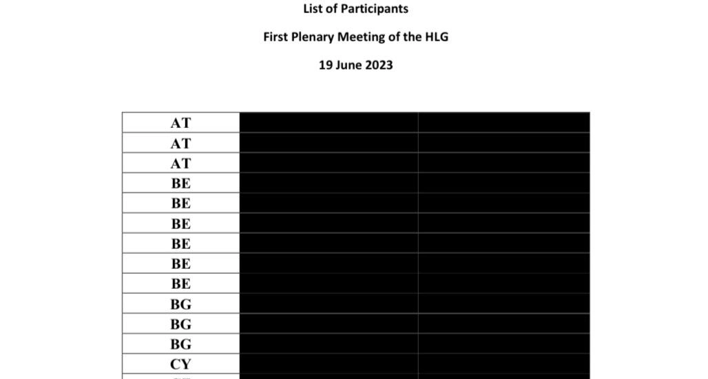
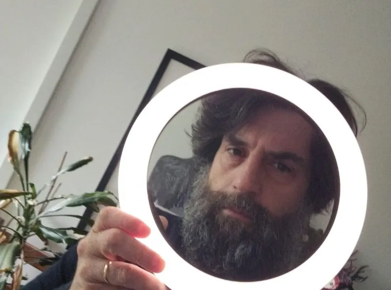

When it comes to digital rights and consumer protection, EU institutions still seem to be thinking on magnetic bands and fax machines. While the US and China try to dominate, the EU puts in place regulation to ensure that Europe will not. On the other end of the internet, the EU permits unfiltered access to US and Chinese social media as if they are not being used as instruments of political propaganda or to ensure our generation growing up has an attention span of 30 seconds, feels inferior because not being able to afford Dubai chocolate and cannot send a plain text document by mail. Worse, we introduce cybersecurity laws that amount to ticking checkboxes and surveillance instead of addressing the real risks associated with not only technological dependencies, but everything from online fraud to cyberattacks.
As in other domains, we're missing a European vision of what we want European tech to look like and do. There is no reason to follow the US or Chinese digital "business model", meaning we neither have to succumb to a darwinistic wild wild west, nor an Orwellian state that aims to keeps social scores for every citizen. What should the EU's digital business model look like? One aspect I care for and hear and see little about are digital rights and consumer protection.
Think about social media: do we know how many users are actual humans and how many users are bots fabricating opinions to raise in popularity or algorithms that push certain narratives over others? The EU should not prohibit this or that narrative, but it must ensure an equal playing field with regards to reach and if some platforms use their reach to enforce specific opinions, these platforms have to either provide transparency or better yet, provide user content in interoperable formats that can be externally viewed.
Another example is AI or LLM models (chatgpt) who are not only illegally scraping copyrighted contents but by doing so also bring down all but the largest websites unable to handle the sheer number of download requests. All websites have a robot.txt file which defines what content can be viewed or scraped. The EU could simply make robot.txt legally binding along with making identification for content scrapers obligatory and allowing class-action lawsuits for illegal scraping.
A final example is rampant online fraud from romance scams to cyberattacks. We have a seemingly solid system for credit card theft where financial institutions are liable for flagging fraudulent transactions - as my bank calling and asking if I just bought a TV for 3.000€ in Japan. If not, my credit card was stolen, I will get a new one and the transaction will be voided. Compare this your lonely grandfather transferring 25.000€ to his perceived niece in Ghana or said niece buying 1.000€ of iTunes gift cards in a batch and sending the codes to someone claiming to be you with neither the bank nor the merchant being liable.
In theory, simple legislative modifications could achieve a lot. What does the EU propose instead: Chat Control - the complete Orwellian surveillance of all private conversations of everyone. We can be lucky if we end up only with a social score like in China that may only prevent us to buy bus tickets if we criticised some government measure. You are putting a paper letter in an envelope before sending assuming nobody can read what you wrote. The same should hold for any other means of private conversation and the EU should be called out for attempting to remove citizens' privacy - from chat control to abolishing cash for motives that never actually make it into the public sphere.
My focus points
Interoperability
The Digital Services Act requires cloud providers to be interoperable, so I can move my cloud service from one provider to another. The same should hold for online content. It should belong to the author (not the platform on which it is published - important change) and all platforms should use interoperable formats with public APIs, so I can make one post on multiple platforms and, more importantly, pull posts from whoever and where ever I want into my private feed. The EU doesn't need to build its own Facebook. Interoperability will allow users to view what they want on their own feed - no bots, no AI algorithm, no central or federated platform.
Privacy
Life should not be a popularity contest and neither should our digital lives be gamified so that we score points when filing our tax return on time and loose them or get barred from travelling if we complain about the state-owned German railway not being punctual. The secrecy of correspondence that applies to paper letters is enshrined in the Constitution of many countries. It should also apply to digital messaging and any attempt by EU and national governments to introduce mass surveillance should be halted. Because else we should also do away with paper envelopes, because terrorists could just switch to writing letters.
Accountability
Financial intermediaries provide a service of transferring your funds from your account to another account. This service already has to comply with certain legal requirements like anti-money laundering regulations. It should also come with obligations for due diligence with respect to KYC (know your customer) and ensuring the safety of the financial service. Service providers should therefore be held accountable for executing fraudulent transactions. This should include not only the bank when your grandfather wires the aforementioned 25.000€ to Ghana, but also online merchants selling gift cards that facilitate money laundering and are used as semi-anonymous currency.
Related blog posts

ChatControl: the end of the secrecy of correspondence
(Sven Franck, ) Even if 72% of the European population is against it, total surveillance of our digital communication risks becoming a near reality. Best we end the secrecy of correspondence with it.Read the article.

Should the EU break social media?
(Sven Franck, ) The public consultation on Europe's future Democracy shield is about to close and albeit a high signal to noise ratio courtesy of an initiative from Slovakia, making our democracies more resilient is becoming an urgency.Read the article.
Bananas? Bent. Lids? Fixed. Social media: you're next!
(Sven Franck, ) The negative effects of social media far outweigh its benefits even before Donald Trump took office. Just like with junk food, the European Commission would have the regulatory means to protect citizens and make the European online world a better place. The time is now.Read the article.